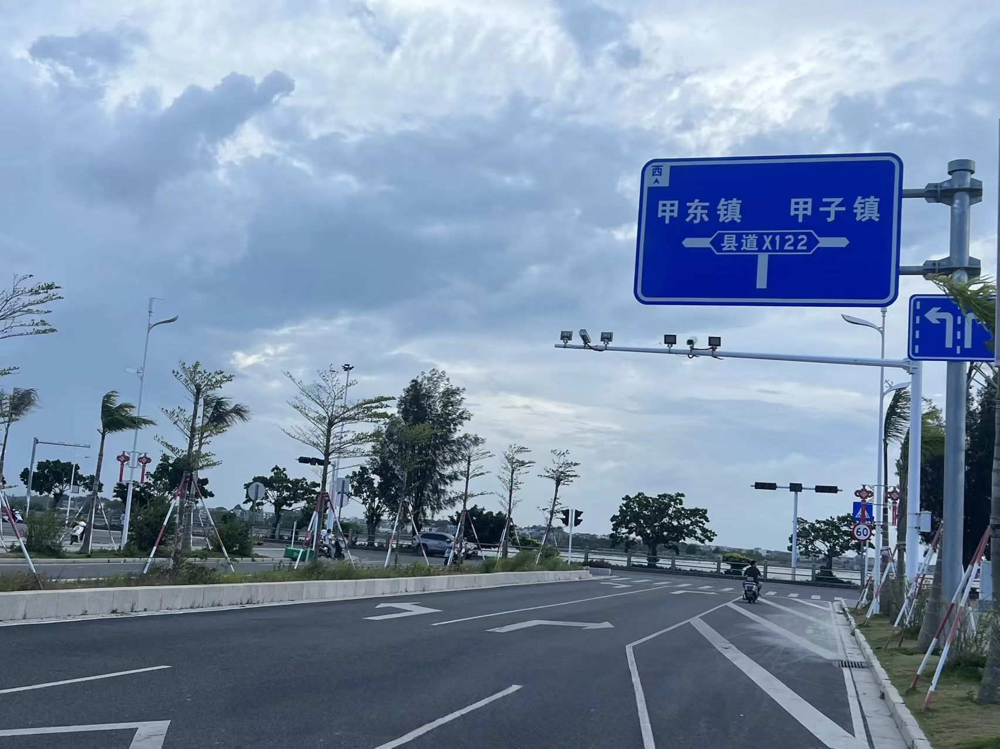
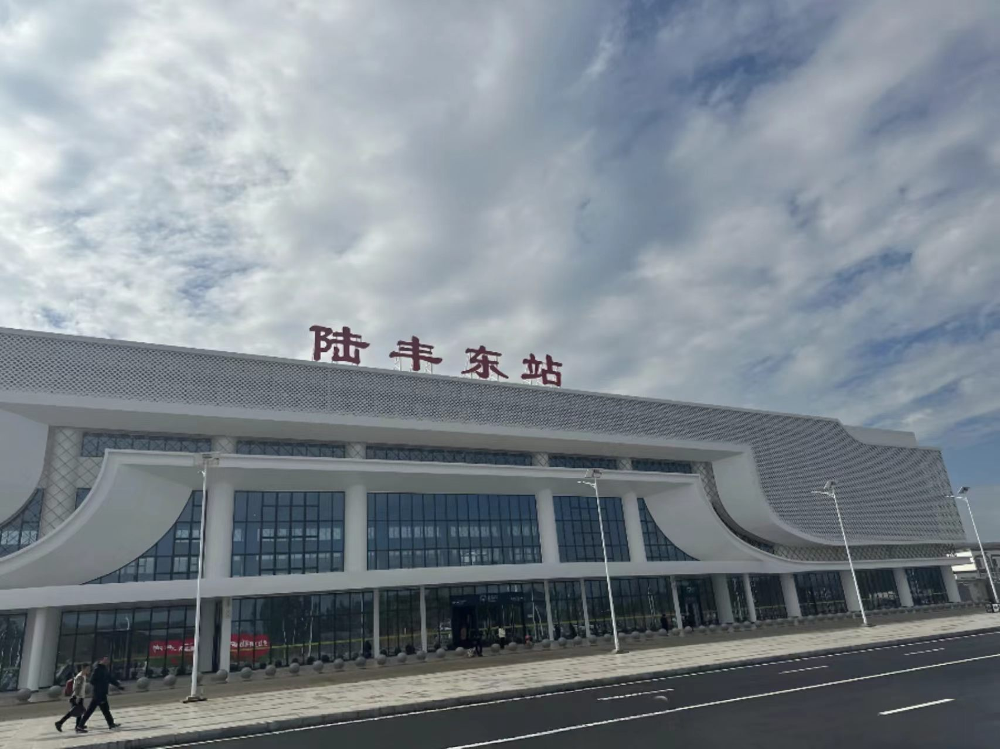
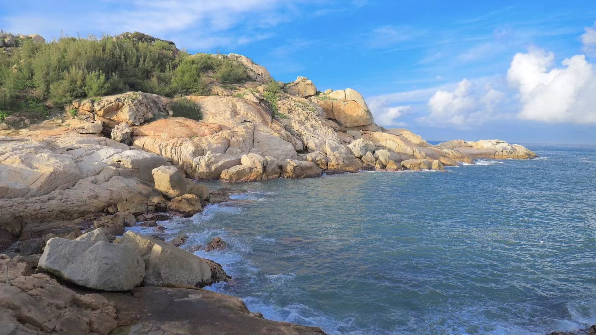

潮汕渔家传统特色产品宣传平台
陆丰三甲片区包含甲子、甲东、甲西三镇，拥有千年天然渔港，是粤东重要海产产地。 本地依托海洋资源，产出各类天然海产干货、渔家手工美食，传承百年渔家民俗与开渔文化。 本平台整合三甲本地特色物产、渔港风光、渔家传统文化，全方位展示滨海渔港独有风情。
了解三甲区位交界，千年渔港历史，完整渔家民俗文化，探访滨海渔村发展历程。
涵盖海产干货、渔家手工美食、海洋农产三大品类，包含鱿鱼干、虾米、鱼丸、渔家糕点等本地特产。
从海产干货、渔家美食、海洋文创中精选代表好物，搭配实拍图片深度展示产品工艺、风味与渔家文化，直观了解三甲特色伴手礼。